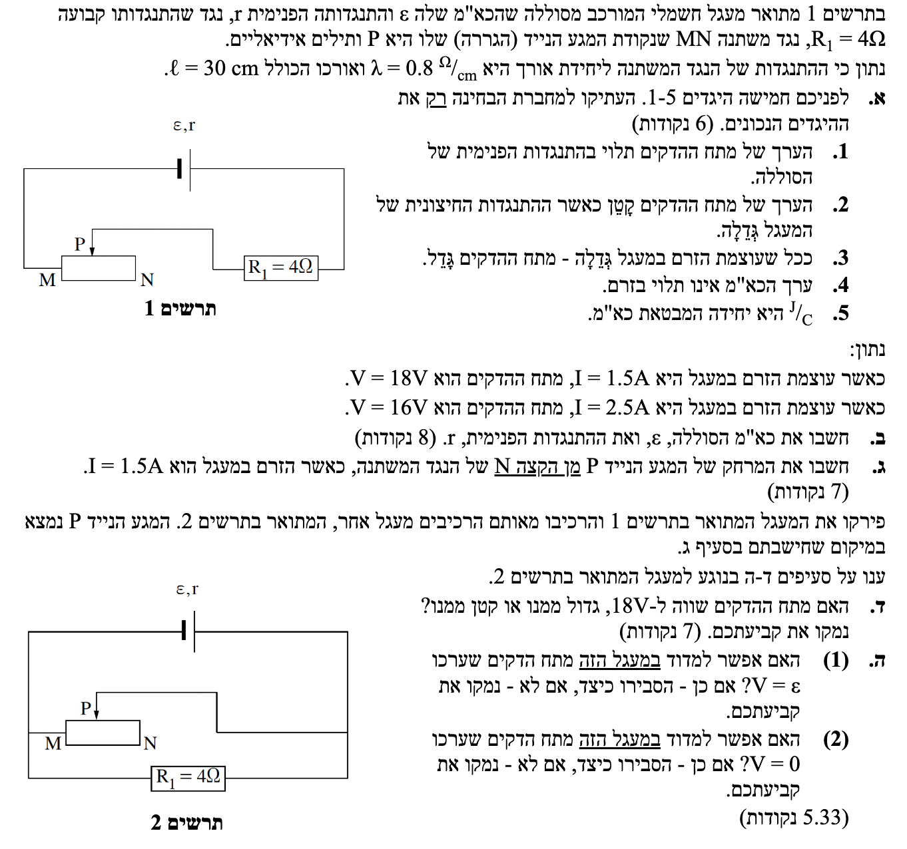
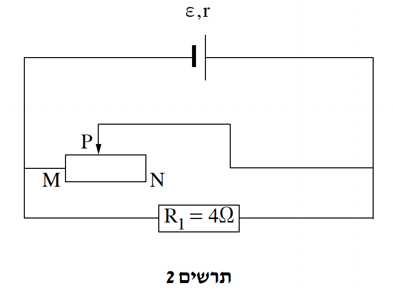

פתרון מלא, מודרך וצעד-אחר-צעד הכולל ניתוח מעגלים

לפני שניגש לסעיפי השאלה, חשוב להבין נתון מיוחד שמופיע בה: \( \lambda = 0.8 \frac{\Omega}{\text{cm}} \).
מדף הנוסחאות אנו מכירים את הנוסחה להתנגדות של תיל: \( R = \rho \frac{L}{A} \). נוסחה זו מראה שההתנגדות תלויה בסוג החומר (ההתנגדות הסגולית, \( \rho \)), באורך התיל (\( L \)) ובשטח החתך שלו (\( A \)).
כאשר עובדים עם תיל העשוי מחומר מסוים ובעל שטח חתך קבוע (כמו הנגד המשתנה שלנו), היחס \( \frac{\rho}{A} \) הוא בעצם קבוע. את הקבוע הזה אנו מסמנים באות היוונית למדא (\( \lambda = \frac{\rho}{A} \)), והוא מבטא את צפיפות ההתנגדות (התנגדות ליחידת אורך). כך, במקום להשתמש בשני משתנים נפרדים, ההתנגדות הופכת לתלות פשוטה וליניארית באורך בלבד: \( R = \lambda \cdot L \).
יחידות המידה הנתונות אומרות לנו בפשטות שעבור כל סנטימטר של אורך תיל בנגד המשתנה שלנו, קיימת (ומתווספת) התנגדות של \( 0.8\text{ }\Omega \).
בפיזיקה אנו מקפידים לעבוד ביחידות תקניות של מטרים. מכיוון שבמטר אחד יש 100 סנטימטרים, ההתנגדות של מטר שלם תהיה גדולה פי 100 מזו של סנטימטר בודד. לכן, עלינו להמיר את צפיפות ההתנגדות למטרים:
כעת נוכל לקחת את הנגד המשתנה שלנו, שאורכו הכולל נתון כ- \( L = 30\text{ cm} = 0.3\text{ m} \), ולהסיק ממנו את ההתנגדות הכוללת של הנגד (כלומר, ההתנגדות של המרחק MN). אנו עושים זאת על ידי הכפלת צפיפות ההתנגדות באורך הנגד המלא:
מסקנה: התנגדותו הכוללת של הנגד המשתנה היא \( 24\text{ }\Omega \). מידע מקדים זה ישמש אותנו בהמשך הפתרון לחשב בקלות את ההתנגדויות של חלקי הנגד השונים!
נבחן כל היגד בנפרד:
מסקנה: ההיגדים הנכונים הם: 1, 4, 5.
נציב את הנתונים לתוך המשוואה וניצור מערכת של שתי משוואות בשני נעלמים:
נחסר את המשוואה השנייה מהראשונה כדי לבטל את \( \varepsilon \):
כעת נציב את הערך שמצאנו עבור \( r \) באחת המשוואות (למשל, הראשונה) כדי למצוא את \( \varepsilon \):
מסקנה: \( \varepsilon = 21.0\text{ V} \quad , \quad r = 2.00\text{ }\Omega \)
תחילה, נמצא את ההתנגדות החיצונית הכוללת במעגל (\( R_{ext} \)) כאשר הזרם הוא 1.5A:
על פי תרשים 1, הזרם יוצא מההדק החיובי למגע M, עובר דרך קטע הנגד המשתנה \( MP \), יוצא מהמגע הנייד P אל הנגד הקבוע \( R_1 \) ומשם להדק השלילי. כלומר, הקטע \( MP \) והנגד \( R_1 \) מחוברים בטור. החלק \( PN \) מנותק ואינו חלק מהמעגל. לכן:
כעת נחשב את האורך של הקטע \( MP \). כפי שראינו בשלב המקדים, ההתנגדות של קטע בנגד המשתנה שווה למכפלת צפיפות ההתנגדות באורכו (\( R = \lambda \cdot L \)):
האורך הכולל של הנגד המשתנה הוא \( 0.3\text{ m} \). המרחק מהקצה N הוא למעשה האורך של הקטע \( PN \):
מסקנה: המרחק של המגע הנייד P מן הקצה N הוא \( 0.200\text{ m} \) (או 20 ס"מ).
ננתח בזהירות את תרשים 2:
לכן, מעגל 2 הוא למעשה חיבור במקביל של הנגד \( R_1 \) וקטע הנגד המשתנה \( MP \) אל הדקי הסוללה.

כעת נחשב את ההתנגדות החיצונית השקולה במעגל 2 (\( R_{eq2} \)) לפי נוסחת חיבור נגדים במקביל:
בסעיף ג' ראינו שההתנגדות החיצונית במעגל 1 הייתה \( 12\text{ }\Omega \). לכן, ההתנגדות החיצונית הכוללת במעגל 2 קטנה משמעותית מזו שבמעגל 1.
על פי חוק אום למעגל שלם, אם ההתנגדות החיצונית קטנה, הזרם הכולל במעגל \( I \) גדל.
לפי הנוסחה \( V_{ab} = \varepsilon - I r \), כאשר הזרם הכללי גדל, הביטוי המופחת (\( Ir \)) גדל, ולכן מתח ההדקים \( V_{ab} \) חייב לקטון.
מסקנה: מתח ההדקים במעגל 2 יהיה קטן מ-18V.
כדי שיתקיים \( V = \varepsilon \), נדרש שהזרם יתאפס (\( I = 0 \)), מצב המתרחש רק בנתק מוחלט (\( R_{ext} \rightarrow \infty \)). נבדוק האם ההתנגדות השקולה יכולה להיות אינסופית. נפתח את ביטוי ההתנגדות השקולה כפונקציה של ההתנגדות המשתנה \( R_{MP} \) מתוך נוסחת החיבור במקביל (זכרו, הקטע \( PN \) מנותק ואינו במשחק):
נציב את ערך ההתנגדות הקבועה \( R_1 = 4\text{ }\Omega \) וניצור מכנה משותף (\( 4 \cdot R_{MP} \)):
נהפוך את השבר כדי לבודד את ההתנגדות השקולה כפונקציה של ההתנגדות \( R_{MP} \):
פונקציה זו עולה ככל ש-\( R_{MP} \) עולה. מאחר שטווח הערכים של \( R_{MP} \) מוגבל עד \( 24\text{ }\Omega \) (כאשר המגע נמצא בקצה N), ההתנגדות המקסימלית שתתקבל במעגל היא:
ההתנגדות החיצונית חסומה ב-\( 3.43\text{ }\Omega \). לכן, היא אינה יכולה לשאוף לאינסוף, הזרם אף פעם לא יתאפס, ולא ניתן למדוד מתח השווה לכא"מ.
מסקנה (1): לא אפשרי. לא ניתן ליצור נתק במעגל, ולכן הזרם לא יתאפס לעולם.
כדי שיתקיים \( V = 0 \) נדרש מצב של קצר חשמלי שבו ההתנגדות החיצונית היא אפס (\( R_{ext} = 0 \)). לפי הפונקציה שלנו:
אם נזיז את המגע הנייד P עד לקצה השמאלי ביותר, M, אזי ההתנגדות של החלק MP תהיה אפס (\( R_{MP} = 0\text{ }\Omega \)). נציב במשוואה:
הזזת המגע ל-M מחברת את ההדק החיובי והשלילי ללא שום התנגדות. הזרם הכללי במעגל יעקוף את הנגד \( R_1 \) לחלוטין ויזרום דרך ה"קצר", ומתח ההדקים יצנח ל-0.
מסקנה (2): כן, זה אפשרי. אם נזיז את המגע הנייד לקצה M ניצור קצר על הסוללה (\( R_{ext}=0 \)), ומתח ההדקים יהיה \( 0\text{ V} \).